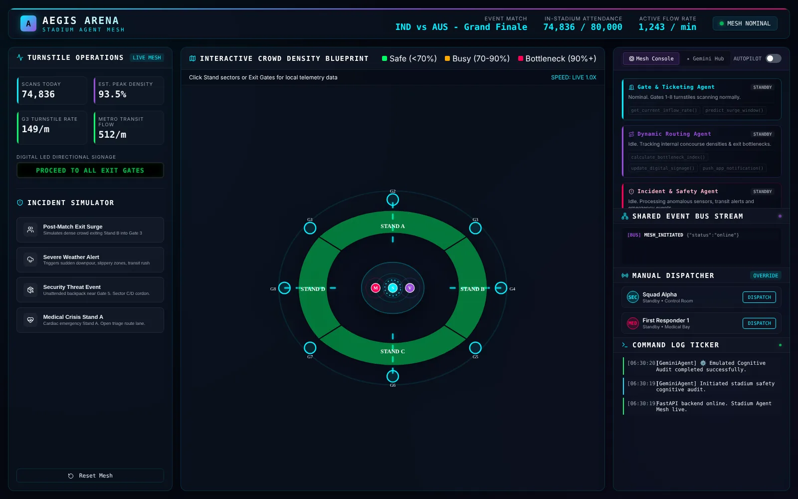

Smart venues · Agentic Premier League Grand Finale
Aegis Arena
A real-time command platform for stadium crowd safety, bottlenecks and incidents.
PythonFastAPIMulti-agent event busWebSocketsReact
- Problem
- Exit surges and security incidents at large venues build up faster than control rooms can react.
- Solution
- A decentralised mesh of Gate, Routing and Safety agents predicts surges, reroutes crowds through signage and app alerts, and dispatches responders with live ETAs.
- Interface
- A live stadium map with heatmaps, gate status, responder movement and a console that shows each agent's reasoning.